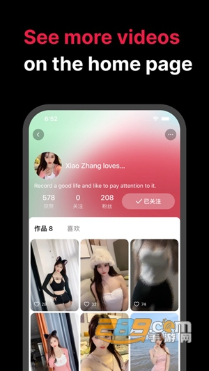

Tale 三个月深度用：出海短视频里最轻的那一档
对比过几款主流出海短视频后，为什么最终留下的是包体只有94MB、没有iOS版的Tale？从内容推荐到创作体验，它在轻量化上做到了什么程度，又牺牲了什么。
出海短视频这条赛道，用过的人大概都有一个共同体验：装了好几款，真正留在首页的往往只有一个。我先后试过三款主打海外内容的短视频应用，最终留住我的是 Tale——不是因为它功能最全，恰恰相反，是因为它有意识地砍掉了很多东西，才换来了另外一些东西。
先摆一下这个类目的格局：大厂的方案基本走"内容 + 创作 + 社交"全家桶路线，包体普遍在 150~250MB 之间，内容池经过算法反复筛选后越来越同质化；一些垂直产品要么只做内容消费端，要么只做剪辑工具端，用户想同时刷和剪得装两个 App。Tale 处在中间那个位置——它没有大厂的生态纵深，也不敢做纯工具或纯内容的单点突破，而是用官网上那个极简的双端定位，把"轻"这件事做到了极致。
轻量化不是噱头
Tale 的官方下载只有 94MB，这个体积在出海短视频里是什么概念？同类产品动不动就是 150~250MB，有的装完再加点缓存直接冲 400MB。对旗舰机用户来说这点差距可能不痛不痒，但对用入门安卓、或者手机里已经装了二三十个 App 的人来说，几十 MB 的差额直接决定了"装不装"。我身边几个还在用 3GB RAM 千元机的朋友，Tale 是他们唯一能流畅用的出海短视频。
轻量化带来的连锁反应是启动快、切后台不杀进程、更新包体积小。Tale 从点开应用到第一屏视频出来，实测不超过两秒。对比过某大厂同类产品，同网络环境下首次加载要等四到五秒，冷启动更容易被系统回收。
但轻量化不是一味砍功能。Tale 的做法更像是"砍掉非核心路径的冗余"——它把刷片这个核心体验做扎实了，把创作端收敛到刚好能覆盖日常分享的程度，不去做那些"看起来很厉害但百分之九十的用户不会碰"的功能。

双端合一的切换成本为零
很多人没想到的一点：Tale 不只是刷视频的工具，还是一个入门级的剪辑器。你在刷到什么好镜头想自己剪一个，或者手机相册里已经攒了一堆旅行 vlog 素材，直接在同一个 App 里就能完成从素材导入到导出上传的全流程。
这个"双端合一"的设计，解决的是一个常见痛点：内容消费和内容生产之间的切换成本。如果你用国内某大厂的方案，刷视频在 A 应用，剪视频在 B 应用（还是同一个大厂的另一个产品），素材要导出再导入，草稿不共享，账号体系还要单独登录一次。Tale 把这两个动作打通了——看的时候想剪，点一下创作入口；剪完想发，选好标题标签直接上传，同一个账号。
创作端本身也很克制：素材导入、基础剪辑（分割、拼接、调速）、滤镜、贴图、字幕、音乐、导出——你能想到的日常分享需要的操作全覆盖。贴图的灵活用法我后来去Tale文档翻了一下，标注、造笑点、引导关注三种典型场景都给了实操示例，但不会出现"多层轨道""绿幕抠像""专业调色面板"这类只有重度创作者才需要的东西。上手时间大概十分钟，剪一个 15 秒到 1 分钟的日常视频，熟练了五分钟就能出成品。
全球内容池的"不刻意"
Tale 的推荐算法有个特点：不会刻意给你贴地域标签。你刷到的内容可能是巴西的美食教程、印尼的校园日常、美国街头的即兴表演、中东的咖啡师手冲——语言以英语为主，但画面本身就是内容，不依赖母语理解也能完整看完。
这点跟国内短视频平台形成了有意思的对比。国内平台的算法会迅速把你锁在一个或几个兴趣标签里，刷半小时后你看到的基本就是同几个类型的内容。Tale 的推荐逻辑更"散"——它不是不做个性化，而是不会用地域标签把你框死。对想了解海外互联网文化、或者做跨境内容调研的人来说，这个体验挺珍贵的：你能看到真实海外创作者在聊什么、拍什么、关注什么，而不是算法精选过的"适合中国用户看的海外内容"。
当然，这种"不刻意"也是双刃剑——如果你想深挖某个特定领域，比如只看韩国美妆或只看日本咖啡，Tale 的推荐可能不如垂直内容平台精准。但反过来，如果你打开应用的初衷就是"看看世界各地的人在干嘛"，那它反而比那些做了精细化地域筛选的产品更贴近那个初衷。
为这些优势付出了什么
说了三个优点，也得说清楚 Tale 为这些取舍掉的东西。
首先是平台覆盖——只有安卓。没有 iOS，没有 PC。用 iPhone 的用户直接跳过，想用电脑剪视频的创作者也跳过。这个局限相当大，很多人可能看到这里就不打算往下看了。但反过来想，如果 Tale 要同时覆盖三个平台，安装包不可能保持在 94MB，开发资源也不可能集中在安卓端把"轻"做到极致。
其次是创作功能的天花板。Tale 能应付日常分享需求，但如果你需要多层轨道、绿幕抠像、专业调色、多轨音频混音这类功能，它就远远不够了。专业创作者还是得用专门的剪辑工具——或者同一个大厂生态下的专业剪辑产品。Tale 的定位从一开始就不是给这些人做的。
最后是内容深度的限制。Tale 上的视频基本都是竖屏，单条 15 秒到 3 分钟。想看长视频、深度内容、纪录片、知识型长文的人，在 Tale 上找不到这些。它解决的是碎片时间的轻度消费，不是沉浸式的深度阅读或观看。
选购结论：谁该用 Tale
说了这么多，总结一下：
- 如果你每天有固定的通勤、等车、排队这类碎片时间，想刷点海外内容换换口味，又不想让国内内容池占满首页——Tale 值得装，它的全球推荐流确实能给你看到不一样的东西。
- 如果你手机里存了一堆旅行 vlog、日常记录、宠物瞬间的素材，想剪成像样的短视频发社交平台，但又不想花时间学复杂的剪辑软件——Tale 的创作端够用，双端合一的体验比装两个 App 省事。
- 如果你是做跨境电商、外贸、或者单纯对海外互联网文化感兴趣，想了解不同市场上什么内容在火——Tale 的不贴地域标签的推荐逻辑，比那些做了严格地域筛选的产品更有参考价值。
反过来，以下几种情况可以直接跳过 Tale：用 iPhone、需要专业级剪辑、想看国内热门内容、或者想沉浸式看长视频。它在这些场景下就是不如专门的产品。Tale 的功能文档和安装资料我在三个仓库各存了一份——GitHub 是主仓，Gitee 和 GitCode 做镜像，哪个访问快就用哪个。
最终推荐：装一个试试，留着首页不会后悔——前提是你用安卓、手机存储还紧张、又恰好想看点不一样的海外日常。